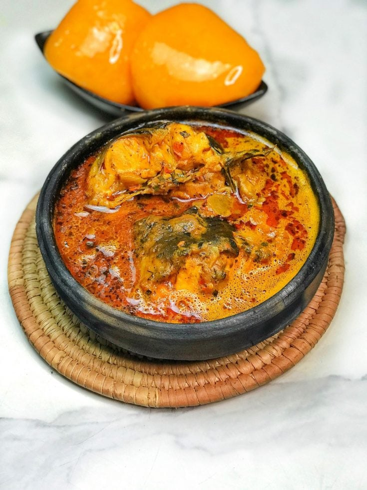

Banga Soup

Description
Banga soup, a traditional delicacy originating from the Niger Delta region of Nigeria, is a rich and
flavorful palm nut soup that embodies the essence of West African cuisine. Made from freshly extracted
palm nut juice, banga soup is renowned for its deep, earthy flavors and vibrant red hue. This hearty soup
is typically simmered with an array of aromatic spices, including garlic, onions, and traditional Nigerian
spices like uziza and oburunbebe, which infuse the broth with layers of complexity and warmth. Often
prepared with assorted meat or fish, such as goat meat, beef, or fresh fish, banga soup offers a
tantalizing medley of textures and tastes, making it a beloved staple in Nigerian households and a
cherished symbol of cultural heritage.
Ingredients:
Here are the ingredients and steps typically used in preparing Banga Soup:
- Freshly extracted palm nut juice
- Assorted meat of fish (e.g.., goat meat, beef, fish)
- Aromatic spices and herbs (e.g.., garlic, onions, uziza, oburunbebe)
- Ground crayfish
- Periwinkle (optional)
- Stockfish (optional)
- Dry fish (optional)
- Pepper (to taste)
- Salt (to taste)
- Seasoning cubes or powder (e.g.., Maggi or Knoor)
- Water
Steps
- Prepare the Palm Nut Juice:
- Extract the fresh palm nut juice from palm nuts by pounding or blending them with water and strainning through a fine sieve or cheesecloth to remove any solids.
- Boil the Meat or Fish
- In a large pot, add the assorted meat or fish and cover with water.
- Add chopped onions, garlic, seasoning cubes or powder, and salt to taste.
- Bring to a boil and simmer until the meat or fish is tender, Skim off any foam or impurities that rise to the surface.
- Add Palm Nut Juice:
- Once the meat or fish is cooked, pour in the freshly extracted palm nut juice.
- Add more water if needed to achieve the desired consistency
- Bring the mixture to a gentle boil, then reduce the heat and simmer for about 20-30 minutes stirring occasionally.
- Season the Soup:
- Add ground crayfish, chopped onions, pepper to taste, and any additional seasoning cubes or powder if desired.
- Adjust the salt and seasoning to taste, ensuring a well-balanced flavor profile.
- Add Optional Ingredients:
- If ussing, add periwinkle, stockfish, and dry fish to the soup, allowing them to cook until tender and flavors meld together.
- simmer and Serve:
- Allow the soup to simmer for another 10-15minutes, allowing the flavors to meld together and the soup to thicken slightly.
- Serve hot with traditional staples like starches or fufu, ganished with chopped uziza leaves or other fresh herbs for added flavor and visual appeal.